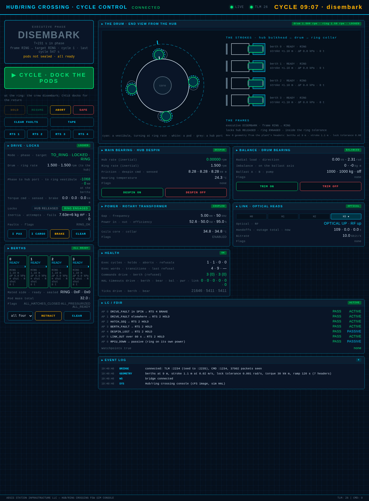

Aegis Station
Hub/Ring Boundary
The hub/ring boundary is the interface between Aegis Station's despun central hub and its three co-rotating habitat rings. Everything the station needs to move — crew, cargo, water, power, data, heat — crosses it. The principle is singular: no continuous rotary mechanical interface carries a life-critical flow. No slip rings. No continuous rotary seals. Every crossing is contactless, cyclic, or removed by giving each side its own copy of the function.
This page is the crossing read as a mechanism, then built as flight software and run. The mechanism is a drum that is locked to the hub, locked to the ring, or being driven between them, and never free. The software is a seven-application flight computer image, a physics simulator of the drum, its locks, its berths and its bearings, and an operator console; the image has crossed hub to ring, run every fault in its library, and recorded each run.

1. The principle
Continuous rotary mechanical interfaces — slip rings, brush assemblies, rotary fluid unions — are the historically failure-prone elements of rotating space systems: wear, contamination, seal degradation, single points of failure. Aegis Station does not have them at the hub/ring boundary. Each flow is handled by the mechanism matched to its duty cycle:
- Cyclic mechanical transfer for crew, cargo and bulk fluids: pods carried by a drum between the hub and the ring, mated to one or the other and never in motion against anything they are sealed to.
- Contactless coupling for power and data: a rotary transformer across an air gap, and free-space optical heads at the bearing.
- Function distribution for heat and utilities: each side rejects its own heat and carries its own services where that is cheaper than crossing.
The hub is an interface, not an umbilical. A ring with every crossing out of service stays habitable on its own power, life support and radiators. The crossing is sized for traffic: each ring is its own refuge, sectored, and is not evacuated through the hub.
2. The crossing as a mechanism
At each ring face a despun spine core, 7 m across, passes through the ring collar's 8 m main bearing. On the core, between the hub bulkhead and the collar face, rides an annular magazine drum, 24 m across and 8 m long. Four through-berths at 9 m radius hold pods, 3.5 m by 7 m with a hatch at each end. The hub bulkhead has four ports; the collar face has four vestibules; the berths match both. A hub lock and a ring lock make the drum's frame explicit; a drive on the collar carries it between them; a brake on the drum's bearing stops it without the drive; a 1.1 m axial stroke pushes a pod out of its berth to mate with a port or a vestibule. Every interface is a bearing or a lock, and none of them is a seal.


The drum
- An annulus on the spine core, its outer diameter just past the hub wall; about 60 t of structure, 7.6 million kg·m² with four passenger pods aboard, three times that with cargo
- Four berths at 90°, so all four pods transfer together; the four vestibules match
- Water ballast in two tanks on the drum trims the load of a part-filled drum; a single loaded cargo pod alone is about 12 kN on the drum bearing
The locks and the drive
- Lock tolerance 10 mm at the berths and 0.01 rpm, a fifth of the capture envelope, so a locked drum always captures
- Drive stator on the collar, rotor on the drum: the spin-up torque reacts into the ring, whose angular momentum is tens of millions of times the drum's. No reaction wheels
- The brake acts toward the hub frame and needs no drive: it is the way home on a stall
The pods
- 3.5 m by 7 m, a hatch at each end, 4 crew nominal and 6 in contingency; the cargo variant carries one 45 t water cartridge
- Independent life support for 24 hours and a pressure hull of its own: the stall between frames is survived in the pod
- The hatches are sensed, never driven, and are mechanically held unless the pod is hard-mated with the pressure across the seal under 1 kPa
The stroke and the mate
- 1.1 m at 20 mm/s: soft capture at 1.0 m, hard mate at 1.1 m, then the tunnel between pod and port is equalized and leak-checked for 60 s before a hatch will open
- Both sides share one axis and one rate, so the mate is a linear motion in the rotating frame; no seal slips at any phase
- Gravity in a pod at ring rate is about 0.02 g, floor outward; crew step into the vestibule and take a lift in a spoke to the rim
Figures
| Figure | Value | Note |
|---|---|---|
| Station | ring centreline 350 m, floor 397 m, 1 g at the floor at 1.50 rpm | the hub 20 m across, the spine core 7 m through an 8 m bearing |
| Magazine drum | 24 m across, 8 m bore, 8 m long | an annulus on the despun spine core between the hub bulkhead and the ring collar face |
| Berths | four, at 9 m radius, 90° apart | matching the four hub ports and the four vestibules |
| Pod | 3.5 m × 7 m, a hatch at each end, about 8 t | 4 crew nominal, 6 in contingency; a loaded cargo pod about 53 t |
| Push stroke | 1.1 m each way at 20 mm/s | soft capture at 1.0 m, hard mate with a static seal, equalization, a 60 s leak check |
| Lock tolerance | 10 mm at the berth radius, 0.01 rpm | engagement fails safe outside it; a release under torque faults the lock |
| Spin-up | 120 s at about 10 kN·m | passenger drum, about 1.5 kW peak; the cargo drum about 14 kN·m |
| Gravity in a pod at ring rate | about 0.02 g | floor outward |
| One-way cycle | about 7.5 min for the mechanism | seal, retract, spin, lock, push, mate, as run in simulation; boarding and disembarking are the crew's time on top |
| Throughput per ring face | 64 crew/h nominal, about 144 in surge | sized for scheduled traffic; the ring is its own refuge |
3. One cycle
An outbound crossing: boarding with the drum locked to the hub and the pods mated to the bulkhead ports; seal, hatches closed and pods pressurized; retract the pods into the drum; spin, releasing the hub lock, ramping to ring rate, closing the residual angle to the vestibules and engaging the ring lock; push the pods to the vestibules; mate, equalize and leak-check; disembark at the ring. The return is the same with the frames exchanged. The scene below is the phase model of the concept, the ring at its true rate, scrubbable to any second; the simulation's own timings are in the next section.
4. What the simulation showed
The crossing was built as flight software on NASA's core Flight System, on the pattern Aegis Station uses for its vehicles: seven applications (the executive that runs the cycle and refuses what the rules forbid; the drive loop with its two locks; the four berths; and monitors for the main bearing's despin, the drum's balance, the rotary transformer and the optical link) beside the stock fault-response applications, against a physics simulator of the drum, the locks, the strokes, the pressures, the bearings, the transformer and the heads, in lockstep with the flight computer's clock. The image was then run through the fault library its requirements review asks for, each run judged on the flight computer's own record: the executive's phase and its reasons, the Limit Checker's actionpoints and the stored command sequences they start.
The nominal crossing
On the flight computer image, from the operator's second command with the hatches closed to the pods ready at the ring: seal 5 s, retract 56 s, spin 164 s (release 2, ramp 111, align 49, engage 2), lock and push 59 s, mate with equalization and leak check 152 s — 436 s in all, 441 to 455 s across the later runs as the schedule falls, no fault, no refusal, the hub at zero rate throughout. Boarding, the pods docking at the hub ports and leak-checking, takes 210 s before that. The mechanism's time is about seven and a half minutes each way; the crew's boarding and disembarking are not timed by the executive. Two thirds of the spin is the ramp; the rest is closing the residual angle the ramp leaves, which is where a faster cycle would come from.
The fault library
| Fault | Injected | What the flight computer did |
|---|---|---|
| Drive stall below half rate | drive torque lost 40 s into the ramp, 34 % of ring rate | the drive's own stall rule faulted within 1 s; the executive aborted and braked; the Limit Checker ran its brake sequence; the drum stopped between frames in 15 s; restored and resumed, home at the hub |
| Drive stall above half rate | the same at 90 s, 75 % | the same chain; the brake took 31 s from 1.1 rpm; home at the hub, because the brake acts toward the hub by construction and there is no way to the ring without the drive |
| Operator abort below half rate | ABORT 20 s into the ramp | the drive turned back; locked to the hub in 83 s |
| Operator abort above half rate | the stored abort sequence started from the ground 100 s into the ramp | the drive finished to the ring; locked to the ring in 71 s |
| A lock that will not release | the hub lock stuck engaged before the crossing | the mechanism refused the release and faulted the lock; the drive reported a lock fault with no torque commanded; the executive aborted on a drum that never moved; freed and cleared, idle at the hub |
| A lock that misses | the drum's angle forced 20 mm off while the ring lock's dogs seat | the engagement failed safe, the drive re-indexed and engaged on the retry; the crossing completed with no fault and no trip |
| A push without the lock | a pod pushed toward the ring with only the hub locked, bypassing the executive | the probe met the moving port, the stroke halted at 1.0 m on the capture miss, the berth faulted, the executive held, the Limit Checker ran its hold sequence; cleared and retracted, idle |
| A leak on the mate | a 0.1 kPa/s seal leak after hard mate at the ring | the leak was judged during equalization within a tick; the executive held with the hatches kept shut; fixed, cleared, the crossing completed |
| A hatch out of sequence | a hatch tried before equalization; a hatch opened during the leak check | the first was refused by the mechanism; the second was flagged in 0.3 s, the executive held, the Limit Checker tripped in 1.3 s; closed and cleared, boarding completed |
| Imbalance over limit | one 53 t cargo pod alone with three 8 t pods | the executive sized the ramp to the load cells; the balance monitor flagged the imbalance and pumped the ballast to its limit; the crossing completed in 455 s |
| Transformer gap drift | the rotary transformer's gap to 12.5 mm during the spin | the unit shut down and the power monitor said so; the Limit Checker raised an event and started nothing, because the ring is on its own power; the crossing completed; a reset at 5 mm cleared it |
| An optical head out | one of the four ring-side heads faulted during the spin | the link dropped once a revolution for the gap the head left, 89 s of outage over 62 handoffs with none over 60 s, the RF backup up; no hold; the crossing completed |
| Hub despin lost | the hub's despin drive lost 20 s into the ramp | the hub reached 0.01 rpm in 16 s and the bearing monitor flagged it; the Limit Checker held the crossing with the drive holding rate between frames; restored, the hub was despun in 7 s; resumed, the crossing completed |
What the full stack found that unit tests could not. Every one of these responses had been shown in the standalone tests first. The image found two things more. The executive accepted a HOLD during an abort, and the Limit Checker's drive-fault rule sent one the moment the executive left the spin phase to abort: the hold suspended the abort and the way to resume it was lost. The executive now refuses a hold during an abort, resumes an abort from such a hold, and the Limit Checker's rule excludes the abort. And two rows of the review's expected-outcome table were wrong: a stall above half rate cannot finish to the ring, because the brake is toward the hub; and a lock that will not release is a drive fault and an abort, not a hold. The table was corrected to what the mechanism does.

5. Cargo and bulk fluids
Cargo crosses in the same pod form factor as crew, on a mirror-image cargo drum at each ring face. Bulk water, pressurant gas and other fluids cross as sealed cartridges, not as flowing streams through rotating plumbing, so there is no continuous rotary fluid union anywhere on the station.
Cargo pod
- Shared envelope and transfer interface with the passenger pod; no life support, the full envelope for payload
- An internal cradle for one 45 t water cartridge, standard modules or outsize hardware
- Pressurized or not per mission; active thermal for sensitive payloads
Cargo drum
- Mechanically identical to the passenger drum, three times its inertia loaded, 240 s to ring rate at the same acceleration
- Scheduled independently of the passenger cadence
- Takes a passenger pod in contingency if a passenger drum is out of service
Bulk fluids
- Water for the ring's shielding arrives as sealed cartridges on cargo pods and is discharged inside the ring at dry, pressure-equalized interfaces
- Empty cartridges return the same way for refill on the surface
- Pressurant gas in dedicated cartridges on the same path
What this removes
- No rotary water line, no rotary gas seal
- No shared failure mode between fluid transfer and structural rotation
- Fluid seal life stops being a station-level reliability driver
6. Power
Power crosses by contactless inductive coupling: a rotary transformer at the main bearing whose primary and secondary turn against each other across a gap of a few millimetres. No brushes, no sliding contact, no wear item on the power path.
Primary path
- A rotary transformer at each ring interface, the primary on the hub side and the secondary on the collar
- A high-frequency link; efficiency in the mid 90s at the nominal gap, falling with the gap, shut down above 12 mm
- Gap, frequency, coil temperatures and transferred power monitored by the crossing's own software
Ring-mounted generation
- Each ring carries its own arrays and storage for life support and essential loads
- The transformer is primary; the ring's own power is backup and peaking
- A ring survives a complete hub-power outage on its own; a transformer shutdown is an event the crossing notes and carries on through
No slip rings
- Slip rings and brush assemblies are excluded from the boundary
- Brush wear, contamination and arcing do not exist here
- Maintenance on the boundary power path is scheduled, not reactive
Fault isolation
- Hub and ring power are independent circuits with no shared fault domain
- Transformer isolation blocks common-mode faults between the buses
- The loss of one ring does not propagate to the hub or to the others
7. Data
Data crosses by free-space optical links at the main bearing, close to the spin axis. The spine core passes through the bearing, so nothing on the ring side can sit on the axis itself; four ring-side heads around the bearing, with fields of ±50° that overlap, hand off to the hub-side receiver as the ring turns. No mechanical rotation of the link is required, and the link was run with a head out: it dropped once a revolution for the gap the head left and never for long enough to matter.
Near-axis optical
- Four heads at the bearing, four handoffs a revolution, overlapping fields
- Bandwidth and latency for all station operational and crew traffic
- No EMI, no contact wear, no continuous rotary mechanical interface
Redundant paths
- A low-rate RF backup for safing and reacquisition; the crossing holds only if the optical link is down for more than 60 s with no RF
- Ring systems buffer through an outage
- Fibre paralleling the crew transit path as a wired route
8. Thermal
Most of the station's waste heat does not cross the boundary. Ring heat is rejected by ring-mounted radiators on the rotating structure, hub heat by hub-mounted radiators, which removes what would otherwise be the highest-duty-cycle wear item on the station: a continuous rotary fluid coupling on a working thermal loop.
Ring-side rejection
- Habitat thermal loads handled entirely on the ring
- Rotation geometry compatible with radiator view-factor management
- No thermal working fluid crosses the boundary in the primary path
Hub-side rejection
- Hub equipment heat rejected on the hub's own radiators
- The only thermal coupling is air exchange through the pressurized transit path, a known and benign one
9. Summary, status and partnership
| Flow | Crossing | Continuous rotary seal? |
|---|---|---|
| Crew | Pods on a drum locked to one frame or the other and driven between them | No |
| Cargo | The same, on the cargo drum | No |
| Bulk water | Sealed cartridges carried as cargo pod payload | No |
| Pressurant gas | Sealed gas cartridges carried as cargo pod payload | No |
| Power | Rotary transformer, contactless inductive | No |
| Data | Near-axis free-space optical with handoff | No |
| Thermal | Rejected on each side independently | No |
What exists. A requirements review of the crossing with its budgets, trades and hazards; the flight software, its simulator and its console, complete through a nominal crossing, the fault library above and a recorded, played-back run; and the drawings on this page. The requirements review is at its first baseline on these results.
What is a model. Everything. No part of the crossing has been built. The drum's mass, the bearing friction, the lock's seating time, the tunnel's equalization and the transformer's efficiency are placeholders chosen to be plausible and marked as such; the analyses that replace them (the lock's seating dynamics, the brake's sizing, an 8 m bearing in vacuum, the drum's structure) are the next work. What the simulation demonstrates is the sequence and its interlocks: that the rules of the mechanism, kept twice over by the executive and by the mechanism itself, do what the review says they do, and that every fault in the library ends somewhere safe.
Partnership. The crossing's flight software, its simulator, the console and the recorded runs are complete and are proprietary to Aegis Station. They are not slated for public release. The work is open to partnership: Aegis Station shares the code for evaluation with qualified organizations under agreement. The station's other rotating-boundary systems — the ring's balance, the cartridge berthing on the cargo drum's far side, the shield fill — follow the same path.
This page describes the boundary only. Ring-internal architecture, hub infrastructure and the overall station design are addressed elsewhere in the program documentation.
← Back to Home